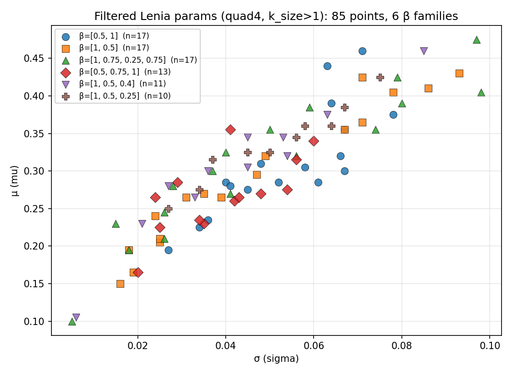

1Inria Centre at the University of Bordeaux · 2Allen Discovery Center, Tufts University · 3Wyss Institute, Harvard University · 4Inria, INSA Lyon, CITI
Submitted to ALife 2026 · Paper (PDF)
Existing methods for exploring cellular automata and other complex systems mostly operate in open loop: they set initial conditions, execute a full simulation, and observe the outcome, without intervening during execution. We introduce a closed-loop framework based on autotelic reinforcement learning, in which an agent autonomously samples diverse goals and learns a goal-conditioned policy to intervene in a complex system through minimal, local perturbations. We instantiate this framework on Lenia, a continuous cellular automaton known for life-like self-organizing patterns, in an agentic system we call CARL, and demonstrate three capabilities. First, CARL discovers stable solitons across a wide range of Lenia update rules at a higher rate than heuristic baselines. Second, it learns to steer the movement direction of existing solitons with few interventions, showing that CARL can control self-organizing patterns, not only create them. Third, humans can use trained agents to guide solitons through maze environments in real time by specifying high-level directional commands that the agent translates into low-level interventions. Trained across diverse goals, update rules, and random initial states, the agents acquire policies that generalize zero-shot to various out-of-distribution conditions. These results suggest a path toward artificial experimentalist agents that, autonomously or with human guidance, discover and control emergent phenomena in complex systems.
Method — Instantiation: Lenia.

Sec. Soliton Creation Task, Fig. 3–4.
Sec. Rescaled kernel radius, Fig. 5 right. Training used ρ = 10.
Sec. Novel update rules, Fig. 6.
Sec. Soliton Direction Task, Fig. 7.
Sec. Human-in-the-Loop, Fig. 8.
Corresponding author: marko.cvjetko@inria.fr